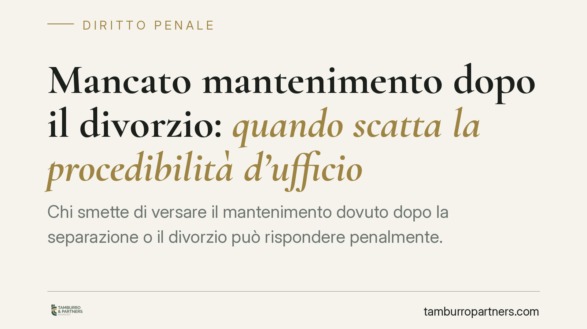

Mancato mantenimento dopo il divorzio: quando scatta la procedibilità d'ufficio
Chi smette di versare il mantenimento dovuto dopo la separazione o il divorzio può rispondere penalmente. Ma il procedimento parte sempre in automatico o serve una querela della persona offesa? La risposta dipende da chi è la vittima dell'inadempimento: l'ex coniuge o i figli. Ecco cosa prevede davvero la legge e cosa fare in concreto.

Il quadro normativo
La violazione degli obblighi economici verso la famiglia è punita dall'art. 570-bis del codice penale, introdotto nel 2018. La norma sanziona il coniuge che si sottrae agli obblighi di natura economica stabiliti dal giudice in sede di separazione, divorzio o scioglimento degli effetti civili del matrimonio.
L'art. 570-bis c.p. non fissa una pena autonoma: rinvia alle sanzioni previste dall'art. 570 c.p. (reclusione fino a un anno o multa). E proprio dal rinvio all'art. 570 c.p. discende il nodo tecnico più delicato: quello della procedibilità, cioè del modo in cui il procedimento penale può essere avviato.
Querela o d'ufficio: la distinzione che conta
Un reato può essere procedibile a querela oppure d'ufficio. Nel primo caso occorre che la persona offesa presenti formale querela, di norma entro tre mesi dal fatto (art. 124 c.p.); senza querela, il procedimento non parte. Nel secondo caso l'autorità giudiziaria interviene autonomamente, appena ha notizia del reato, indipendentemente dalla volontà della vittima.
Qui sta il punto critico spesso frainteso. L'art. 570 c.p., nella sua struttura, prevede regimi differenziati:
- quando l'inadempimento riguarda l'ex coniuge adulto, la procedibilità è tendenzialmente a querela;
- quando la condotta ricade sui figli minori (o comunque sui soggetti deboli tutelati in via rafforzata), la giurisprudenza riconosce la procedibilità d'ufficio, in ragione della natura degli interessi protetti.
Affermare in modo secco che il mancato mantenimento è "sempre procedibile d'ufficio" è dunque impreciso. La regola cambia a seconda di chi subisce l'inadempimento.
Implicazioni pratiche
Per chi non riceve il mantenimento (persona offesa). Se l'inadempimento colpisce i figli, l'inerzia non è un ostacolo: il procedimento può avviarsi anche senza querela, non appena la notizia di reato raggiunge la Procura. Se invece l'inadempimento riguarda l'assegno dovuto all'ex coniuge, è prudente non affidarsi all'automatismo: presentare querela nei termini resta la via più sicura per attivare la tutela penale.
Per chi non paga (potenziale indagato). Il reato richiede una sottrazione volontaria agli obblighi. Non ogni mancato pagamento integra reato: la sopravvenuta e documentata impossibilità economica può escludere la responsabilità penale. Ma non basta subirla in silenzio: va fatta valere formalmente, provando la perdita del lavoro, la riduzione del reddito o altri eventi incidenti sulla capacità di adempiere.
Penale e civile: due binari distinti
La tutela penale non sostituisce quella civile, e viceversa. Sul piano civile il creditore può agire per il recupero delle somme dovute attraverso il pignoramento, l'ordine di pagamento diretto al datore di lavoro dell'obbligato o altre misure esecutive. La denuncia o querela in sede penale persegue un obiettivo diverso: sanzionare la condotta di chi si sottrae ai propri doveri.
I due strumenti possono convivere e spesso conviene valutarli insieme, perché rispondono a esigenze differenti: recuperare il denaro da un lato, ottenere una risposta sanzionatoria dall'altro.
Cosa fare in concreto
- Verifica chi è la persona offesa. Distingui subito se l'inadempimento colpisce te come ex coniuge o i tuoi figli: da questo dipende il regime di procedibilità e l'eventuale necessità di querela.
- Se serve la querela, rispetta i termini. Non lasciar decorrere i tre mesi dalla conoscenza del fatto (art. 124 c.p.): oltre quel termine la via penale può precludersi.
- Raccogli la documentazione. Provvedimento del giudice che fissa l'assegno, prova dei versamenti mancati, comunicazioni scambiate con l'obbligato: sono la base di ogni iniziativa.
- Valuta insieme la via civile. Il pignoramento o l'ordine di pagamento diretto possono essere più rapidi ed efficaci per il recupero delle somme.
- Se sei tu a non poter pagare, documenta l'impossibilità. La difficoltà economica non si presume: va provata e fatta valere formalmente, se necessario chiedendo la revisione dell'assegno.
Consigliamo di valutare la propria posizione con un confronto professionale prima di agire, sia dal lato del creditore sia da quello dell'obbligato: gli errori procedurali, in questa materia, incidono direttamente sull'esito.
---
Contributo informativo a cura di Tamburro & Partners Avvocati - Avv. Giuseppe Tamburro. Non costituisce parere legale.
Ogni condominio ha una storia a sé.
Se gestisci un'amministrazione e vuoi un confronto su una specifica questione condominiale, scrivi allo studio. Ti rispondiamo entro un giorno lavorativo.